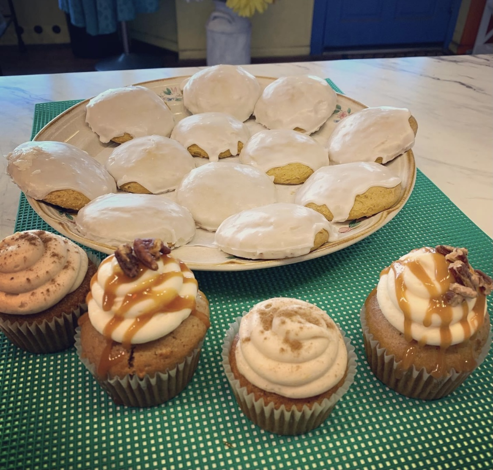

Pictured below are some the best fall seasonal sellers.
We love to provide fun and new items for our customers each season! Although fall has our favorite seasonal items, there are many others that our customers love.
During the winter, we have pecan shortbread cookies, gingerbread cookies, mint brownies, and German chocolate cupcakes. When it gets to the warmer season, spring, we sell strawberry cupcakes, lemon cookies, and blueberry cupcakes. Lastly, in the hot summer months, we make strawberry icebox pie, ice cream cookie sandwiches, and key lime mango cupcakes.